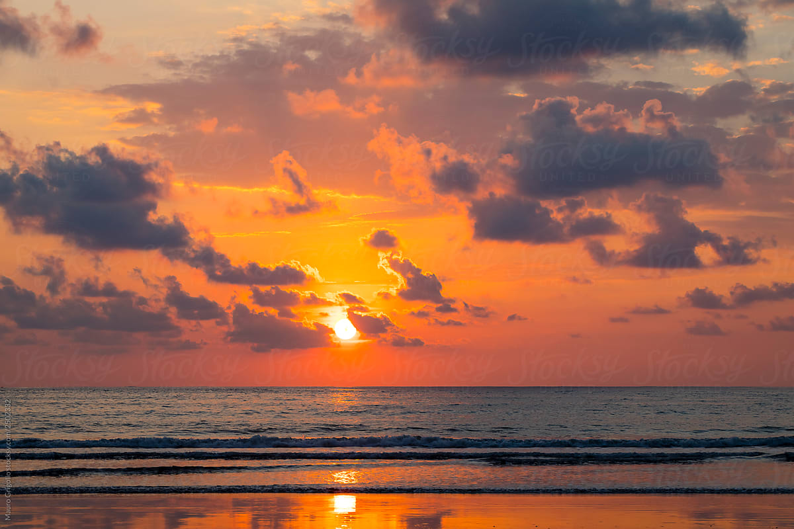

Sara Nurestani
Here is my attempt at using Tailwind to create my bio! I'm 22, originally from Afghanistan, born in Holland and live in London :)
"Knowledge is Power"
Education
Hobbies and Interests
Favourite Shows
Socials
Education:
BSc Economics,
Royal Holloway University of London
Hobbies and Interests:
Boxing
Swimming
Cooking
Favourite Shows:
The Handmaid's Tale
Friends
Bridgerton
Also love sunsets!
